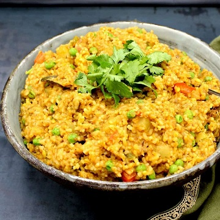

Khichadi

Description
Khichdi is a dish made of rice and lentils (dal) with numerous variations.
Variations include bajra and mung dal khichri. In Indian culture, in several regions, especially
in the northern areas, it is considered one of the first solid foods that babies eat.
Ingredients
- Rice 1/2 cup
- Split Yellow Lentils
- Split Yellow Lentils
- 2 tablespoon Ghee
- 1 teaspoon Cumin Seeds
- 1 Bay Leaf
- 1 Onion, Chopped
- 1 tablespoon Ginger Garlic Paste
- 2 Green Chilies, Slit
- 1/2 teaspoon Turmeric Powder
- 1 teaspoon Red Chili Powder
- As required Salt To Taste
- Coriander Leaves For Garnish
Steps
- Wash and soak rice and lentils for 30 minutes.
- Heat ghee in a pressure cooker and add cumin seeds, bay leaf, and whole spices.
- Add chopped onions, ginger-garlic paste, and green chilies. Saute until onions turn golden brown.
- Add soaked rice, lentils, turmeric powder, red chili powder, and salt. Mix well.
- Add water and pressure cook for 3-4 whistles. Let the pressure release naturally.
- Garnish with coriander leaves and serve hot with yogurt or pickle.